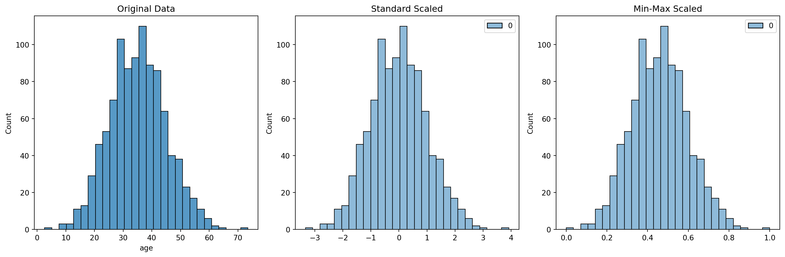
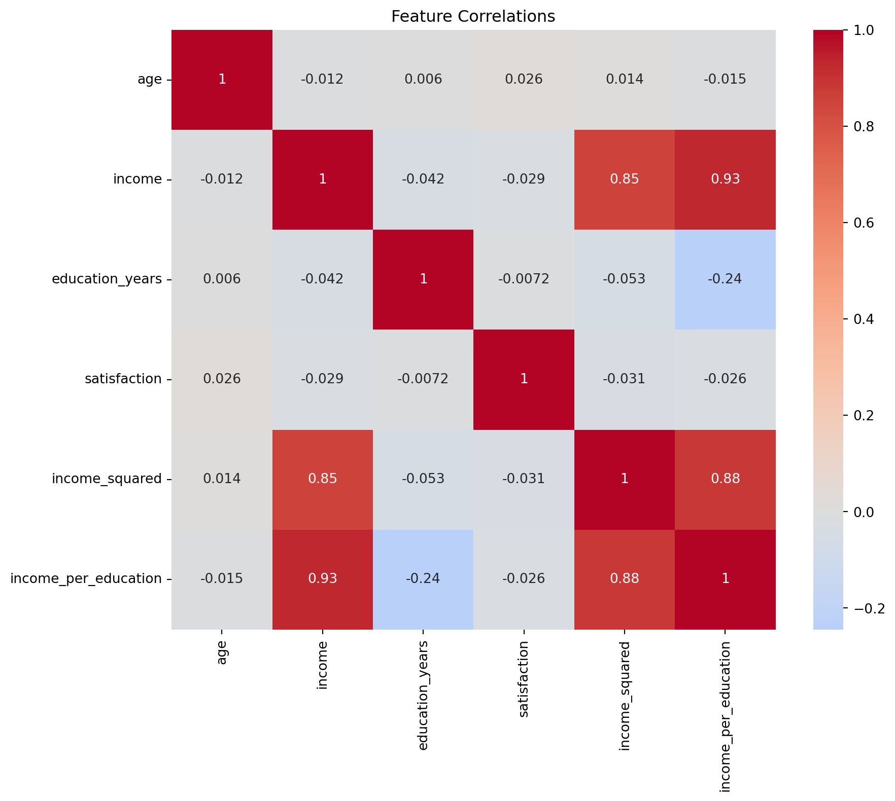

# Example usagedf_clean = handle_missing_values(df.copy())print("Missing values after cleaning:")print(df_clean.isnull().sum())
2.2.2 2. Scaling Features
Let’s compare different scaling methods:
Show/hide scaling comparison code
def compare_scaling_methods(data):# Original data original = data['age'].copy()# Standard scaling scaler = StandardScaler() standard_scaled = scaler.fit_transform(original.values.reshape(-1, 1))# Min-max scaling min_max_scaler = MinMaxScaler() minmax_scaled = min_max_scaler.fit_transform(original.values.reshape(-1, 1))# Plotting fig, axes = plt.subplots(1, 3, figsize=(15, 5))# Original distribution sns.histplot(original, ax=axes[0]) axes[0].set_title('Original Data')# Standard scaled sns.histplot(standard_scaled, ax=axes[1]) axes[1].set_title('Standard Scaled')# Min-max scaled sns.histplot(minmax_scaled, ax=axes[2]) axes[2].set_title('Min-Max Scaled') plt.tight_layout() plt.show()compare_scaling_methods(df)

2.2.3 3. Feature Generation
Interactive Feature Generator
Use the code below to experiment with different feature combinations:
Show/hide feature generation code
def generate_features(df):"""Generate new features from existing ones"""# Polynomial features df['income_squared'] = df['income'] **2# Interaction features df['income_per_education'] = df['income'] / df['education_years']# Binning df['age_group'] = pd.qcut(df['age'], q=5, labels=['Very Young', 'Young', 'Middle', 'Senior', 'Elder'])return df# Generate new featuresdf_featured = generate_features(df.copy())# Show correlationsplt.figure(figsize=(10, 8))sns.heatmap(df_featured.select_dtypes(include=[np.number]).corr(), annot=True, cmap='coolwarm', center=0)plt.title('Feature Correlations')plt.show()

2.3 Best Practices
Key Points to Remember
Always scale features after splitting into train/test sets
Handle missing values before feature generation
Document all preprocessing steps for reproducibility
Validate generated features with domain experts
2.4 Interactive Feature Selection Tool
Show/hide feature selection tool
from sklearn.feature_selection import SelectKBest, f_regressiondef plot_feature_importance(X, y, k=5):"""Plot top k most important features""" selector = SelectKBest(score_func=f_regression, k=k) selector.fit(X, y)# Get feature scores scores = pd.DataFrame({'Feature': X.columns,'Score': selector.scores_ }).sort_values('Score', ascending=False)# Create interactive bar plot fig = px.bar(scores, x='Feature', y='Score', title=f'Top {k} Most Important Features', labels={'Score': 'Importance Score'}) fig.show()# Example usageX = df_featured.select_dtypes(include=[np.number]).drop('satisfaction', axis=1)y = df_featured['satisfaction']plot_feature_importance(X, y)